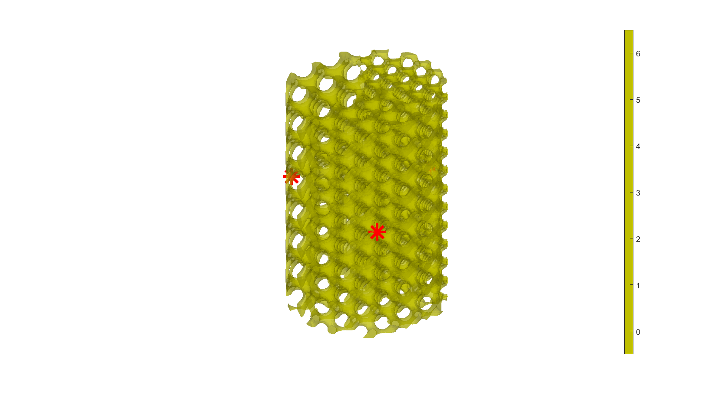

DEMO_0005_Multi_Morph_Cylindrical_Gyroid_
This is a demo for:
- Building geometry for multi-morphology lattices of different gyroid structures in cylindrical domain using hybrid formulation.
- Example-1: Utilizes hybrid formulation in axial direction.
- Example-2: Utilizes hybrid formulation in circumferential direction.
Contents
Name
License: to license
Author: Mahtab Vafaee, mahtab.vafaee@gmail.com
Change log: 2023/11/15 MV Created 2024/02/1 MV Sorted for publishing ----------------------------------------------------------------------
clear; close all; clc;
Plot settings
fontSize=20; faceAlpha1=0.8; markerSize=10; lineWidth1=3; lineWidth2=4; markerSize1=25;
Control parameters
res=100; %Resolution L=9; %Length size R=3; %Radius size
Example-1: Axial Transition (Figure-5(a))
inputStruct_A.L=L; % characteristic length inputStruct_A.R=R; inputStruct_A.Ns=res; % number of sampling points inputStruct_A.isocap=1; %Option to cap the isosurface inputStruct_A.surfaceCase='g'; %Surface type inputStruct_B = inputStruct_A; inputStruct_C = inputStruct_A; % Set parameters for individual gyroid inputStruct_A.numPeriods=[8 8 8]; %Number of periods in each direction inputStruct_A.levelset=-0.7; %Isosurface level inputStruct_A.gradiantF=0; %Gradiant Factor levelset_A=inputStruct_A.levelset; inputStruct_B.numPeriods=[5 5 5]; inputStruct_B.levelset=-0.8; inputStruct_B.gradiantF=0; %Gradiant Factor levelset_B=inputStruct_B.levelset; inputStruct_C.numPeriods=[6 6 6]; inputStruct_C.levelset= -0.6; inputStruct_C.gradiantF=0 ; %Gradiant Factor levelset_C=inputStruct_C.levelset; % Compute individual gyroids % No need to store faces and vertices, only require underlying S, % grid coordinates, and levelset values [F,V,C,S_A,X,Y,Z,~,~]=CylindricalTPMS(inputStruct_A); [~,~,~,S_B,~,~,~,~,~]=CylindricalTPMS(inputStruct_B); [~,~,~,S_C,~,~,~,~,~]=CylindricalTPMS(inputStruct_C); % Define the central location of each individual gyroids in space % E.g., At center_A, the gyroid will definitely correspond to input_A. % As we move away from center_A, it will slowly transition into other % gyroids with input_B and input_C. center_A = [0, 0, L/6]; center_B = [0, 0, 3*L/6]; center_C = [0, 0, 5*L/6]; % kappa controls the lengthscale of transition between gyroids % Higher kappa => faster transition % Lower kappa => slower transition kappa = 5; % Using Gaussian (a.k.a. radial basis functions) interpolation. % One can use any interpolation scheme of choice as long as weights at % every grid point sum up to 1. % Computing the weights for each gyroid evaluated on all grid points. weights_A = exp(-kappa * (Squared_distance_from_point(X,Y,Z,center_A))); weights_B = exp(-kappa * (Squared_distance_from_point(X,Y,Z,center_B))); weights_C = exp(-kappa * (Squared_distance_from_point(X,Y,Z,center_C))); % Weights must sum up to 1. sum_weights = weights_A + weights_B + weights_C; weights_A = weights_A ./ sum_weights; weights_B = weights_B ./ sum_weights; weights_C = weights_C ./ sum_weights; % Interpolating using the above weights graded_S = weights_A .* (S_A - levelset_A) ... + weights_B .* (S_B - levelset_B)... + weights_C .* (S_C - levelset_C); % Compue isosurface graded_levelset = 0; [f,v] = isosurface(X,Y,Z,graded_S,graded_levelset); c=zeros(size(f,1),1); % Compute isocaps [fc,vc] = isocaps(X,Y,Z,graded_S,graded_levelset,'enclose','below'); % Boilerplate code for preparing output for exporting/visualization nc=patchNormal(fc,vc); cc=zeros(size(fc,1),1); cc(nc(:,1)<-0.5)=1; cc(nc(:,1)>0.5)=2; cc(nc(:,2)<-0.5)=3; cc(nc(:,2)>0.5)=4; cc(nc(:,3)<-0.5)=5; cc(nc(:,3)>0.5)=6; % Join sets [f,v,c]=joinElementSets({f,fc},{v,vc},{c,cc}); % Merge nodes [f,v]=mergeVertices(f,v); % Check for unique faces [~,indUni,~]=unique(sort(f,2),'rows'); f=f(indUni,:); %Keep unique faces c=c(indUni); % Remove collapsed faces [f,logicKeep]=patchRemoveCollapsed(f); c=c(logicKeep); % Remove unused points [f,v]=patchCleanUnused(f,v); % Invert faces f=fliplr(f); % Visualize center_V=[center_A; center_B; center_C]; Hybrid_vizualize(f,v,c,[], center_V);

Example-2: Circumferential Transition (Figure-5(b))
inputStruct_A.L=L; % characteristic length inputStruct_A.R=R; inputStruct_A.Ns=res; % number of sampling points inputStruct_A.isocap=1; %Option to cap the isosurface inputStruct_A.surfaceCase='g'; %Surface type inputStruct_B = inputStruct_A; inputStruct_C = inputStruct_A; % Set parameters for individual gyroid inputStruct_A.numPeriods=[8 8 8]; %Number of periods in each direction inputStruct_A.levelset=-0.7; %Isosurface level inputStruct_A.gradiantF=0; %Gradiant Factor levelset_A=inputStruct_A.levelset; inputStruct_B.numPeriods=[5 5 5]; inputStruct_B.levelset=-0.8; inputStruct_B.gradiantF=0; %Gradiant Factor levelset_B=inputStruct_B.levelset; inputStruct_C.numPeriods=[6 6 6]; inputStruct_C.levelset= -0.6; inputStruct_C.gradiantF=0 ; %Gradiant Factor levelset_C=inputStruct_C.levelset; % Compute individual spinodoids % No need to store faces and vertices, only require underlying S, % grid coordinates, and levelset values [F,V,C,S_A,X,Y,Z,r,theta]=CylindricalTPMS(inputStruct_A); [~,~,~,S_B,~,~,~,~,~]=CylindricalTPMS(inputStruct_B); [~,~,~,S_C,~,~,~,~,~]=CylindricalTPMS(inputStruct_C); % Define the central location of each individual gyroids in space % E.g., At center_A, the gyroid will definitely correspond to input_A. % As we move away from center_A, it will slowly transition into other % gyroids with input_B and input_C. % Converting the grid to cylindrical coordinates theta_A = 0; theta_B = 2*pi/3; theta_C = 4*pi/3; center_A = [R*cos(theta_A), R*sin(theta_A), L/2]; center_B = [R*cos(theta_B), R*sin(theta_B), L/2]; center_C = [R*cos(theta_C), R*sin(theta_C), L/2]; % kappa controls the lengthscale of transition between gyroids % Higher kappa => faster transition % Lower kappa => slower transition kappa = 5; % Using Gaussian (a.k.a. radial basis functions) interpolation. % One can use any interpolation scheme of choice as long as weights at % every grid point sum up to 1. % Computing the weights for each gyroids evaluated on all grid points. weights_A = exp(-kappa * ((X-center_A(1,1)).^2 + (Y-center_A(1,2)).^2)); weights_B = exp(-kappa * ((X-center_B(1,1)).^2 + (Y-center_B(1,2)).^2)); weights_C = exp(-kappa * ((X-center_C(1,1)).^2 + (Y-center_C(1,2)).^2)); % weights_A = exp(-kappa * (theta-theta_A).^2); % weights_B = exp(-kappa * (theta-theta_B).^2); % weights_C = exp(-kappa * (theta-theta_C).^2); % Weights must sum up to 1. sum_weights = weights_A + weights_B + weights_C; weights_A = weights_A ./ sum_weights; weights_B = weights_B ./ sum_weights; weights_C = weights_C ./ sum_weights; % Interpolating using the above weights graded_S = weights_A .* (S_A - levelset_A) ... + weights_B .* (S_B - levelset_B)... + weights_C .* (S_C - levelset_C); % Compue isosurface graded_levelset = 0; [f,v] = isosurface(X,Y,Z,graded_S,graded_levelset); c=zeros(size(f,1),1); % Compute isocaps [fc,vc] = isocaps(X,Y,Z,graded_S,graded_levelset,'enclose','below'); % Boilerplate code for preparing output for exporting/visualization nc=patchNormal(fc,vc); cc=zeros(size(fc,1),1); cc(nc(:,1)<-0.5)=1; cc(nc(:,1)>0.5)=2; cc(nc(:,2)<-0.5)=3; cc(nc(:,2)>0.5)=4; cc(nc(:,3)<-0.5)=5; cc(nc(:,3)>0.5)=6; % Join sets [f,v,c]=joinElementSets({f,fc},{v,vc},{c,cc}); % Merge nodes [f,v]=mergeVertices(f,v); % Check for unique faces [~,indUni,~]=unique(sort(f,2),'rows'); f=f(indUni,:); %Keep unique faces c=c(indUni); % Remove collapsed faces [f,logicKeep]=patchRemoveCollapsed(f); c=c(logicKeep); % Remove unused points [f,v]=patchCleanUnused(f,v); % Invert faces f=fliplr(f); % Visualize center_V=[center_A; center_B; center_C]; Hybrid_vizualize(f,v,c,[], center_V);